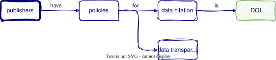
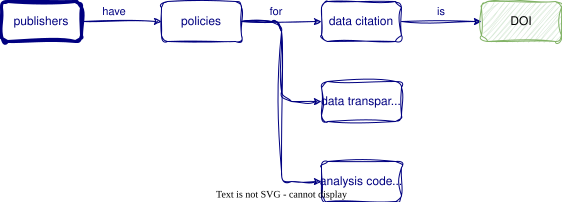
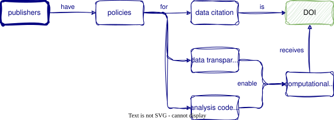
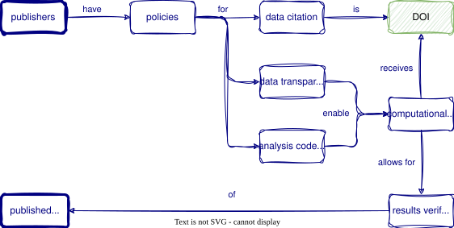
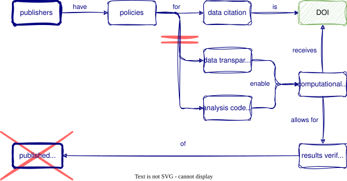
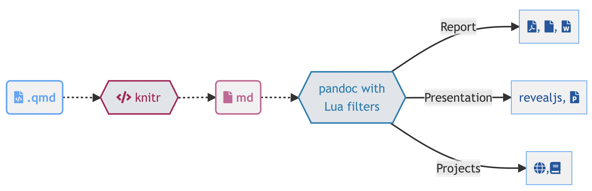
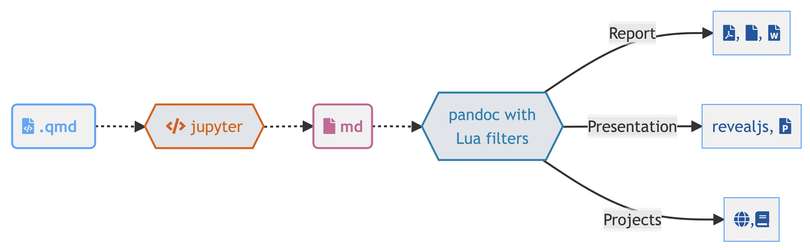

Conditions & Dates & Tables
ds4owd - data science for openwashdata
ETH Zurich
Oct 23, 2025
Learning Objectives (for this week)
- NA
- NA
- NA
- NA
Part 1: Joining data
We…
…have multiple data frames
…want to bring them together
Data: Women in science
Information on 10 women in science who changed the world
| name |
|---|
| Ada Lovelace |
| Marie Curie |
| Janaki Ammal |
| Chien-Shiung Wu |
| Katherine Johnson |
| Rosalind Franklin |
| Vera Rubin |
| Gladys West |
| Flossie Wong-Staal |
| Jennifer Doudna |
Inputs
| name | profession |
|---|---|
| Ada Lovelace | Mathematician |
| Marie Curie | Physicist and Chemist |
| Janaki Ammal | Botanist |
| Chien-Shiung Wu | Physicist |
| Katherine Johnson | Mathematician |
| Rosalind Franklin | Chemist |
| Vera Rubin | Astronomer |
| Gladys West | Mathematician |
| Flossie Wong-Staal | Virologist and Molecular Biologist |
| Jennifer Doudna | Biochemist |
| name | birth_year | death_year |
|---|---|---|
| Janaki Ammal | 1897 | 1984 |
| Chien-Shiung Wu | 1912 | 1997 |
| Katherine Johnson | 1918 | 2020 |
| Rosalind Franklin | 1920 | 1958 |
| Vera Rubin | 1928 | 2016 |
| Gladys West | 1930 | NA |
| Flossie Wong-Staal | 1947 | NA |
| Jennifer Doudna | 1964 | NA |
| name | known_for |
|---|---|
| Ada Lovelace | first computer algorithm |
| Marie Curie | theory of radioactivity, discovery of elements polonium and radium, first woman to win a Nobel Prize |
| Janaki Ammal | hybrid species, biodiversity protection |
| Chien-Shiung Wu | confim and refine theory of radioactive beta decy, Wu experiment overturning theory of parity |
| Katherine Johnson | calculations of orbital mechanics critical to sending the first Americans into space |
| Vera Rubin | existence of dark matter |
| Gladys West | mathematical modeling of the shape of the Earth which served as the foundation of GPS technology |
| Flossie Wong-Staal | first scientist to clone HIV and create a map of its genes which led to a test for the virus |
| Jennifer Doudna | one of the primary developers of CRISPR, a ground-breaking technology for editing genomes |
Desired output
| name | profession | birth_year | death_year | known_for |
|---|---|---|---|---|
| Ada Lovelace | Mathematician | NA | NA | first computer algorithm |
| Marie Curie | Physicist and Chemist | NA | NA | theory of radioactivity, discovery of elements polonium and radium, first woman to win a Nobel Prize |
| Janaki Ammal | Botanist | 1897 | 1984 | hybrid species, biodiversity protection |
| Chien-Shiung Wu | Physicist | 1912 | 1997 | confim and refine theory of radioactive beta decy, Wu experiment overturning theory of parity |
| Katherine Johnson | Mathematician | 1918 | 2020 | calculations of orbital mechanics critical to sending the first Americans into space |
| Rosalind Franklin | Chemist | 1920 | 1958 | NA |
| Vera Rubin | Astronomer | 1928 | 2016 | existence of dark matter |
| Gladys West | Mathematician | 1930 | NA | mathematical modeling of the shape of the Earth which served as the foundation of GPS technology |
| Flossie Wong-Staal | Virologist and Molecular Biologist | 1947 | NA | first scientist to clone HIV and create a map of its genes which led to a test for the virus |
| Jennifer Doudna | Biochemist | 1964 | NA | one of the primary developers of CRISPR, a ground-breaking technology for editing genomes |
Inputs, reminder
Joining data frames
Joining data frames
left_join(): all rows from xright_join(): all rows from yfull_join(): all rows from both x and y- …
Setup
For the next few slides…
left_join()

left_join()
| name | profession | birth_year | death_year |
|---|---|---|---|
| Ada Lovelace | Mathematician | NA | NA |
| Marie Curie | Physicist and Chemist | NA | NA |
| Janaki Ammal | Botanist | 1897 | 1984 |
| Chien-Shiung Wu | Physicist | 1912 | 1997 |
| Katherine Johnson | Mathematician | 1918 | 2020 |
| Rosalind Franklin | Chemist | 1920 | 1958 |
| Vera Rubin | Astronomer | 1928 | 2016 |
| Gladys West | Mathematician | 1930 | NA |
| Flossie Wong-Staal | Virologist and Molecular Biologist | 1947 | NA |
| Jennifer Doudna | Biochemist | 1964 | NA |
right_join()

right_join()
| name | profession | birth_year | death_year |
|---|---|---|---|
| Janaki Ammal | Botanist | 1897 | 1984 |
| Chien-Shiung Wu | Physicist | 1912 | 1997 |
| Katherine Johnson | Mathematician | 1918 | 2020 |
| Rosalind Franklin | Chemist | 1920 | 1958 |
| Vera Rubin | Astronomer | 1928 | 2016 |
| Gladys West | Mathematician | 1930 | NA |
| Flossie Wong-Staal | Virologist and Molecular Biologist | 1947 | NA |
| Jennifer Doudna | Biochemist | 1964 | NA |
full_join()

full_join()
| name | birth_year | death_year | known_for |
|---|---|---|---|
| Janaki Ammal | 1897 | 1984 | hybrid species, biodiversity protection |
| Chien-Shiung Wu | 1912 | 1997 | confim and refine theory of radioactive beta decy, Wu experiment overturning theory of parity |
| Katherine Johnson | 1918 | 2020 | calculations of orbital mechanics critical to sending the first Americans into space |
| Rosalind Franklin | 1920 | 1958 | NA |
| Vera Rubin | 1928 | 2016 | existence of dark matter |
| Gladys West | 1930 | NA | mathematical modeling of the shape of the Earth which served as the foundation of GPS technology |
| Flossie Wong-Staal | 1947 | NA | first scientist to clone HIV and create a map of its genes which led to a test for the virus |
| Jennifer Doudna | 1964 | NA | one of the primary developers of CRISPR, a ground-breaking technology for editing genomes |
| Ada Lovelace | NA | NA | first computer algorithm |
| Marie Curie | NA | NA | theory of radioactivity, discovery of elements polonium and radium, first woman to win a Nobel Prize |
Putting it altogether
| name | profession | birth_year | death_year | known_for |
|---|---|---|---|---|
| Ada Lovelace | Mathematician | NA | NA | first computer algorithm |
| Marie Curie | Physicist and Chemist | NA | NA | theory of radioactivity, discovery of elements polonium and radium, first woman to win a Nobel Prize |
| Janaki Ammal | Botanist | 1897 | 1984 | hybrid species, biodiversity protection |
| Chien-Shiung Wu | Physicist | 1912 | 1997 | confim and refine theory of radioactive beta decy, Wu experiment overturning theory of parity |
| Katherine Johnson | Mathematician | 1918 | 2020 | calculations of orbital mechanics critical to sending the first Americans into space |
| Rosalind Franklin | Chemist | 1920 | 1958 | NA |
| Vera Rubin | Astronomer | 1928 | 2016 | existence of dark matter |
| Gladys West | Mathematician | 1930 | NA | mathematical modeling of the shape of the Earth which served as the foundation of GPS technology |
| Flossie Wong-Staal | Virologist and Molecular Biologist | 1947 | NA | first scientist to clone HIV and create a map of its genes which led to a test for the virus |
| Jennifer Doudna | Biochemist | 1964 | NA | one of the primary developers of CRISPR, a ground-breaking technology for editing genomes |
Part 2: Communicate results with Quarto
Why Quarto? -> Open Science





What is Quarto?
Quarto is a new, open-source,
scientific and technical
publishing system
the goal is to make the process of creating
and collaborating dramatically better

Artwork from “Hello, Quarto” keynote by Julia Lowndes and Mine Çetinkaya-Rundel, presented at RStudio Conference 2022. Illustrated by Allison Horst.
Quarto for literate programming


What is a .qmd?
A Quarto document i.e. a
.qmdis a plain text file
Code
Quarto makes moving between formats straightforward
Comfort of your own workspace


Rich Documentation
Live Coding Exercise: Write a report
Clone GitHub repository from GitHub
- Open the GitHub Organisation for the course: https://github.com/cven5873-ss23/
- Locate the wk-06 repository with your username
wk-06-GITHUB-USERNAME - Follow along with me
Break
10:00
Cross-references
- no space between
{r}and#| tbl-cap: "A table" - spelling tbl not tab
- no spaces (use dashes in
label)
See Table 1…
Homework week 5
Homework due dates
- All material on course website
- Homework assignment & learning reflection due: Friday, 14th July
Capstone Project Report
Information
- All material shared on website by Monday, 17th July
- Due date for report: Friday, 28th July
Thanks!
A large proportion of these slides are taken from Mine Çetinkaya Rundel’s “Hello Quarto” presentation & Thomas Mock’s “Quarto for the Curious” presentation
Slides created via revealjs and Quarto: https://quarto.org/docs/presentations/revealjs/ Access slides as PDF on GitHub
All material is licensed under Creative Commons Attribution Share Alike 4.0 International.